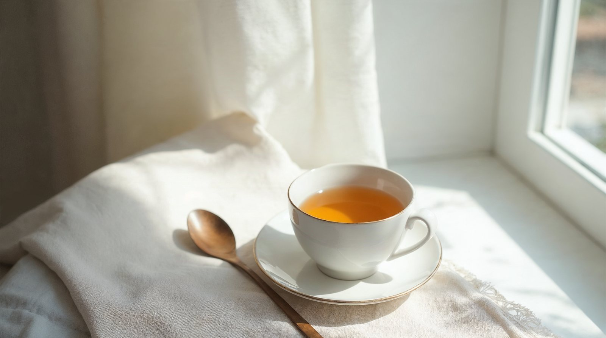
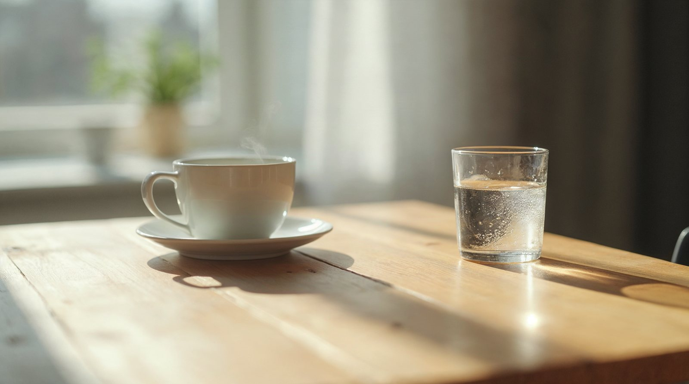
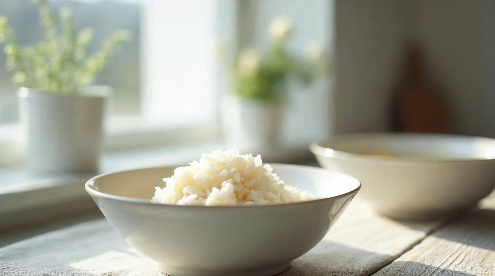
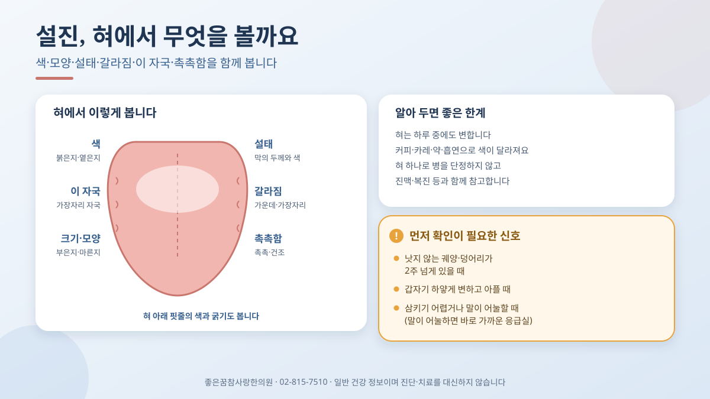

이종호 한의사 감수좋은꿈참사랑한의원 대표원장 (한의사 면허번호 19769)발행 2026-11-23 · 수정 2026-11-27
이 글의 차례
- 왜 혀를 보나요
- 혀에서 보는 것
- 혀 색과 설태는 왜 하루에도 달라 보일까요
- 혀끝과 가운데, 뿌리 쪽은 왜 나눠서 볼까요
- 혀 모습과 함께 맞춰 보는 생활 단서
- 비슷해 보여도 따로 살펴야 하는 경우는요?
- 먼저 이렇게 여쭙니다
- 예를 들면 이런 경우입니다
- 혀를 볼 때 제가 조심하는 점
- 진료 전에 알아 두면 좋은 점
- 혀에 대해 흔히 듣는 오해는 무엇일까요?
- 집에서 해 볼 수 있는 것
- 스스로 점검해 보세요
- 얼마나 지켜보고, 언제 상담하면 좋을까요
- 진료실에서는 이렇게 진행됩니다
- 생활을 바꾸면 혀는 언제쯤 달라 보일까요?
- 혀 사진은 어떻게 남기면 비교하기 쉬울까요?
- 이렇게 기록해 오시면 상담이 쉬워집니다
- 이런 증상은 먼저 확인이 필요합니다
- 함께 읽으면 좋은 글
진료실에서 "혀 한번 내밀어 보세요" 하면 쑥스러워하시는 분이 많아요. 거울로 제 혀를 들여다본 적도 별로 없는데 남에게 보이려니 어색하시죠. 원래 그래요. 그래서 저는 혀를 보는 시간은 짧게, 대신 왜 보는지는 꼭 말씀드리려고 해요.
설진은 혀의 색과 모양, 혀 위를 덮은 설태, 갈라짐과 이 자국, 촉촉한 정도를 보고 몸 상태를 가늠하는 한의학의 진찰이에요. 한의원에서 혀를 내밀어 보시라고 하는 것도 이 때문이거든요.
그러니까 사실은 두 가지를 나눠서 보셔야 해요. '혀가 어떻게 생겼나'와 '그래서 몸이 어떤가'는 다른 얘기예요. 혀 하나로 병을 단정하지 않고, 맥진과 문진, 잠·소화 같은 생활 이야기와 함께 놓고 참고하는 거예요.
왜 혀를 보나요
- 혀는 겉으로 들여다볼 수 있는 몸 안쪽 조직이라, 몸의 수분과 열감, 소화 상태에 따라 색과 설태가 달라지는 경우가 있습니다.
- 한의학에서는 오래전부터 혀를 몸 상태를 비추는 단서로 살펴 왔습니다.
- 같은 피로나 소화 불편이라도 혀 모습이 다르면 생활 조언과 진료 방향을 다르게 살피는 참고가 됩니다.
- 혀는 조명과 침의 양, 먹은 음식에 따라 몇 분 사이에도 달라 보일 수 있어, 한 장면보다 여러 번 본 모습을 함께 비교합니다.
혀에서 보는 것
- 색: 붉은지, 옅은지, 보랏빛이 도는지
- 크기와 모양: 부어 보이는지, 마른 느낌인지
- 설태: 혀 위의 얇은 막이 얼마나 두껍고 어떤 색인지
- 갈라짐: 가운데나 가장자리에 갈라진 줄이 있는지
- 이 자국: 혀 가장자리에 치아 자국이 있는지
- 습윤 정도: 촉촉한지, 건조한지
- 혀 아래 핏줄: 혀를 들어 올렸을 때 보이는 핏줄의 색과 굵기
혀 색과 설태는 왜 하루에도 달라 보일까요
혀는 생각보다 쉽게 모습이 바뀌는 곳입니다. 아침에 막 일어났을 때는 밤새 침이 덜 나와 설태가 두껍고 하얗게 보이기 쉽고, 아침을 먹고 양치를 하고 나면 한결 얇아 보입니다.
물을 적게 마신 날이나 입을 벌리고 잔 날에는 혀 표면이 말라 갈라짐이 더 또렷해 보일 수 있습니다. 반대로 따뜻한 차를 마신 직후에는 혀가 붉고 촉촉해 보이기도 합니다.
조명도 큰 몫을 합니다. 노란 조명 아래에서는 설태가 누렇게, 푸른빛이 도는 조명 아래에서는 혀가 창백하게 보일 수 있어, 저는 되도록 같은 자리, 같은 밝기에서 혀를 보려고 합니다.
그래서 한 번 본 혀 모습보다 "평소에는 어떤가요"라는 질문이 더 중요할 때가 많습니다. 아침과 저녁에 혀가 다르게 보인다면 그 차이도 그대로 말씀해 주세요.
혀끝과 가운데, 뿌리 쪽은 왜 나눠서 볼까요
한의학에서는 오래전부터 혀를 앞쪽 끝, 가운데, 뿌리 쪽, 양쪽 가장자리로 나눠 살펴 왔습니다. 전통적인 설명에서는 혀끝을 가슴 쪽의 열감과, 가운데를 소화와, 가장자리를 긴장과 이어서 보기도 합니다.
다만 이 구분은 오래 쌓여 온 관찰의 틀이고, 특정 장기의 상태를 그대로 비춘다고 보기는 어렵습니다. 저는 자리마다 다른 모습이 보이면 그와 이어지는 생활 질문을 하나씩 더 여쭙는 출발점으로만 씁니다. 예를 들어 혀 뿌리 쪽 설태만 두껍다면 저녁을 늦게 먹는지, 자기 전 간식이 있는지를 여쭙는 식입니다.

혀 모습과 함께 맞춰 보는 생활 단서
- 설태가 혀 가운데 두껍게 끼면 식사 시간과 양, 기름진 음식 뒤의 불편, 대변 상태를 함께 여쭙습니다.
- 혀끝에 붉은 점이 빽빽하면 잠드는 시각, 맵거나 뜨거운 음식, 방의 건조함, 목 상태를 이어서 여쭙습니다.
- 가장자리에 이 자국이 보이면 붓는 시간대와 피로, 손발이 찬지를 함께 봅니다.
- 갈라짐은 있는데 설태가 거의 없으면 식욕의 흐름과 긴장할 때 먹는 습관, 속쓰림의 시간대를 여쭙습니다.
- 맑게 비치는 작은 반점이 많으면 아침 붓기, 맑은 가래, 배와 손발의 온기를 함께 살핍니다.
이런 모습이 보인다고 해서 특정 장기에 병이 있다고 단정하지 않습니다. 옆으로 자는 습관, 한쪽으로 씹는 버릇, 입으로 숨 쉬는 습관도 혀 모습에 영향을 줄 수 있어 생활을 함께 여쭙습니다.
비슷해 보여도 따로 살펴야 하는 경우는요?
- 혀가 따갑고 화끈거리는데 겉으로는 별다른 변화가 없다면, 혀 모습보다 입 마름과 잠, 긴장의 흐름을 함께 봅니다(혀와 입안이 따갑고 화끈거리는 구강작열감은 어떻게 살피나요?).
- 혀 표면에 지도처럼 매끈한 부분과 하얀 테두리가 생겼다가 며칠 사이 자리를 옮기는 모습은 흔히 지도설이라고 부르며, 모양 자체보다 따가움이 함께 있는지를 여쭙습니다.
- 항생제를 먹은 뒤나 흡연, 진한 차를 자주 마신 뒤 혀가 검거나 갈색으로 보이는 경우도 있어, 최근 드신 약과 습관을 먼저 확인합니다.
- 틀니나 교정 장치가 닿는 자리, 날카로운 치아 옆에 생긴 상처는 몸 상태라기보다 닿는 자극 때문일 수 있어 치과 진료를 함께 권합니다.
이런 경우에는 혀를 몸 상태의 단서로 읽기 전에, 입안에서 생긴 변화인지부터 나눠 보는 것이 먼저입니다. 헷갈리시면 언제부터 그런 모습이었는지만 기억해 두셔도 충분합니다.
먼저 이렇게 여쭙니다
- 요즘 가장 불편한 점은 무엇인가요?
- 입맛은 어떻고, 입이 마르거나 쓴맛이 도나요?
- 잠은 몇 시에 들고, 중간에 깨시나요?
- 대변은 규칙적이고 편하신가요?
- 진료 전에 커피나 사탕, 색이 진한 음식을 드셨나요?
- 복용 중인 약이나 최근 받은 검사가 있나요?
- 혀가 따갑거나 맛이 평소와 다르게 느껴지는 때가 있나요?
- 코가 막혀 입을 벌리고 자는 날이 많으신가요?
- 최근 치약이나 구강청결제를 바꾸셨나요?
예를 들면 이런 경우입니다
- 예를 들어 마감이 몰리면 밤에 간식을 찾게 되고 다음 날 아침 속이 쓰리다는 직장인이라면, 혀 모습과 함께 야식 시간과 잠드는 시각을 같이 여쭙습니다.
- 예를 들어 시험 기간에 밤늦게까지 공부하며 목이 따갑다는 수험생이라면, 혀끝의 붉은 점과 함께 잠드는 시각과 방의 건조한 정도를 먼저 여쭙습니다.
- 예를 들어 입이 자주 마르고 혀가 갈라진다는 어르신이라면, 하루에 마시는 물의 양과 복용 중인 약, 틀니 사용 여부를 함께 확인합니다.
- 예를 들어 아이를 돌보느라 끼니를 서서 급히 때우는 날이 많은 부모님이라면, 혀 가장자리와 설태를 보면서 식사 속도와 끼니를 거르는 횟수를 함께 여쭙습니다.
- 예를 들어 회식이 잦은 주에 아침마다 혀가 텁텁하고 누런 막이 낀다는 분이라면, 술자리 횟수와 귀가 시각, 다음 날 아침 식사 여부를 같이 적어 보시도록 권합니다.
혀를 볼 때 제가 조심하는 점
혀 모습은 보는 사람과 조명에 따라 조금씩 다르게 읽힐 수 있다는 한계가 있습니다. 그래서 저는 혀에서 본 것을 결론처럼 말씀드리지 않고, 맥과 생활 이야기, 지난번 모습과 맞아떨어지는지 다시 확인합니다(혀의 색과 모양으로 몸 상태를 읽는 방법에는 어떤 한계가 있나요?).
혀가 평소와 다르다고 해서 겁먹으실 필요는 없습니다. 잠을 못 잔 하루, 짜게 먹은 저녁 한 번에도 혀는 달라질 수 있어, 며칠에서 몇 주에 걸친 흐름을 함께 보는 쪽이 훨씬 도움이 됩니다.

진료 전에 알아 두면 좋은 점
- 진료 직전에는 혀를 세게 닦지 마시고, 커피·카레·사탕처럼 색이 진한 음식과 음료는 1시간쯤 전부터 피하시면 혀 본래 모습을 보기 쉽습니다.
- 식사, 약, 흡연으로 혀 색과 설태가 달라질 수 있어 알려 주시면 함께 감안합니다.
- 혀 사진을 찍어 두려면 밝은 곳에서 비슷한 시간대에 찍으면 비교하기 쉽습니다.
혀에 대해 흔히 듣는 오해는 무엇일까요?
- "하얀 설태는 몸이 나쁘다는 뜻이다": 얇고 고르게 덮인 하얀 설태는 흔히 보이는 모습입니다. 두께와 색, 며칠 사이의 변화를 함께 봐야 의미를 이야기할 수 있습니다.
- "혀가 갈라져 있으면 병이 있다": 타고나기를 갈라진 혀를 가진 분도 많습니다. 갈라짐이 새로 생겼는지, 따가움이 함께 있는지가 더 중요합니다.
- "혀를 깨끗이 닦을수록 좋다": 세게 자주 긁으면 혀 표면이 쓸려 오히려 따갑고 예민해질 수 있습니다.
- "혀 사진만 보내면 상태를 알 수 있다": 사진은 참고가 되지만, 맥과 문진 없이 혀 사진만으로 몸 상태를 말씀드리기는 어렵습니다.
집에서 해 볼 수 있는 것
- 아침에 일어나 물 한 컵으로 입을 헹군 뒤 하루를 시작하기
- 혀 클리너는 앞쪽으로 한두 번 가볍게만 쓰고, 피가 날 만큼 세게 긁지 않기
- 커피나 단 음료를 마신 뒤에는 물을 한 잔 함께 마셔 입안을 헹구기
- 방이 건조하면 습도를 맞추고, 코가 막혀 입으로 숨 쉬는 날이 많다면 그 이유도 함께 살피기
- 저녁 식사는 잠들기 3시간 전쯤 마치고, 야식이 잦다면 횟수부터 줄여 보기
- 맵거나 뜨거운 음식 뒤 혀끝이 따끔했다면 며칠은 미지근하게 먹어 보기
스스로 점검해 보세요
- 아침에 일어나면 입이 마르거나 쓴맛이 돈다
- 혀에 하얀 막이 두껍게 끼는 날이 많다
- 혀 가장자리에 치아 자국이 자주 보인다
- 식사 뒤 더부룩하거나 대변이 일정하지 않다
- 잠이 부족한 날 혀끝이 붉고 따끔하다
- 커피나 단 음료를 하루에 여러 번 마신다
여러 항목에 해당하면 진료 때 그대로 말씀해 주세요. 혀 모습과 생활 이야기를 맞춰 보는 데 도움이 됩니다.

얼마나 지켜보고, 언제 상담하면 좋을까요
- 과식, 음주, 잠 부족 뒤 하루 이틀 설태가 두꺼워지는 정도라면 생활을 정리하며 지켜볼 수 있습니다.
- 설태나 입 마름, 입 냄새가 2주 넘게 이어지거나 소화·잠 불편이 함께 있다면 진료를 받아 보시길 권합니다.
진료실에서는 이렇게 진행됩니다
밝은 곳에서 혀를 편하게 내밀어 몇 초 동안 봅니다.
좋은꿈참사랑한의원에서는 모든 분의 맥을 먼저 짚고 불편한 점을 충분히 들은 뒤, 필요하다고 판단될 때 설진과 함께 복진으로 몸 상태를 살피고 침이나 한약 상담 등 상태에 맞는 방법을 정합니다. 한약은 이런 진찰을 거친 뒤에 처방합니다(한약은 왜 진단을 먼저 하고 처방하나요?).
첫 방문에는 모든 분의 맥을 먼저 짚고, 불편이 시작된 시기와 함께 입맛, 잠, 대변, 몸의 온기, 마음의 긴장을 여쭙습니다. 그다음 혀 전체를 본 뒤 갈라짐과 설태, 가장자리를 차례로 확인하고, 필요하다고 판단되면 배를 눌러 긴장과 온기를 살핍니다.
가져오신 혀 사진이나 건강검진 결과지를 함께 보고, 오늘 본 모습이 어떤 생활 단서와 이어지는지, 다음 진료까지 무엇을 지켜볼지 설명드립니다. 다시 오실 때도 맥부터 다시 짚고, 지난번 혀 모습과 견주어 봅니다.
생활을 바꾸면 혀는 언제쯤 달라 보일까요?
설태는 비교적 빨리 움직이는 편이라, 야식을 줄이거나 잠드는 시각을 앞당긴 뒤 며칠에서 한두 주 사이에 두께가 달라 보이는 분도 있습니다. 혀의 크기나 갈라짐처럼 오래 이어져 온 모습은 그보다 천천히 바뀌거나 그대로인 경우도 많습니다.
그래서 저는 혀 모습이 바뀌는 것 자체를 목표로 삼지 않습니다. 입 마름이 줄었는지, 아침 입맛이 돌아왔는지, 식후 더부룩함이 가벼워졌는지 같은 몸의 느낌을 함께 물으며 혀를 그 곁의 참고로 봅니다.
혀 사진은 어떻게 남기면 비교하기 쉬울까요?
혀 사진은 한 장보다 같은 조건에서 여러 날 찍은 몇 장이 훨씬 도움이 됩니다. 아침에 일어나 물로 입만 헹군 뒤, 양치 전에 찍는 것을 기본으로 정해 보세요.
- 창가처럼 자연광이 드는 곳, 또는 늘 같은 조명 아래에서 찍기
- 혀를 힘주어 길게 빼지 말고 편하게 내민 상태로 2~3초 안에 찍기(오래 내밀면 혀가 붉어집니다)
- 사진 옆에 그날의 잠, 전날 저녁 메뉴, 커피 잔 수를 한 줄로 적기
- 일주일에 두세 번씩 2주쯤 모아 오기
사진을 보며 스스로 좋다 나쁘다를 판단하실 필요는 없습니다. 달라진 날과 그날의 생활을 나란히 놓고 보는 자료로 충분합니다.
이렇게 기록해 오시면 상담이 쉬워집니다
혀는 하루에도 몇 번씩 모습이 바뀌어요. 원래 그런 곳이에요. 그래서 진료실에서 제가 보는 몇 초보다, 그동안 지내 오신 이야기가 더 많은 걸 알려 주는 경우가 많거든요.
- 최근 입맛, 입 마름, 입 냄새의 변화
- 하루 커피 양과 흡연 여부, 복용 중인 약
- 혀가 아프거나 헐었다면 시작된 날짜
- 건강검진 결과지(있다면)
- 최근 바꾼 치약이나 구강청결제
복용 중인 약은 봉투째 가져오시거나 사진으로 찍어 오셔도 돼요. 약에 따라 혀 색이나 입 마름이 달라지기도 해서, 저는 그걸 먼저 알고 혀를 보는 게 순서라고 생각해요.
혀를 보고 맥과 맞춰 보는 건 제가 할게요. 대신 하나만 부탁드려요. 진료 오시는 날 아침에는 혀를 세게 닦지 말고 평소 모습 그대로 오세요. 딴 건 하시던 대로 편하게 지내셔도 돼요.
혀가 평소와 달라 보이면 괜히 마음이 쓰이실 수 있어요. 혼자 거울 앞에서 걱정하기보다 오셔서 같이 보시죠. 궁금한 건 그냥 편하게 물어보세요. 혀와 몸의 이야기를 차근차근 맞춰 보겠습니다.
이런 증상은 먼저 확인이 필요합니다
- 혀에 낫지 않는 궤양이나 단단한 덩어리가 2주 넘게 있는 경우
- 혀 색이 갑자기 하얗게 변하고 통증이 있는 경우
이런 신호가 있으면 한의원보다 가까운 병원이나 응급실을 먼저 찾으세요.
함께 읽으면 좋은 글

여쭙는 것
- 요즘 가장 불편한 점은 무엇인가요?
- 입맛은 어떻고, 입이 마르거나 쓴맛이 도나요?
- 잠은 몇 시에 들고, 중간에 깨시나요?
먼저 확인이 필요한 신호
- 혀에 낫지 않는 궤양이나 단단한 덩어리가 2주 넘게 있는 경우
- 혀 색이 갑자기 하얗게 변하고 통증이 있는 경우
자주 묻는 질문
혀를 보면 병을 알 수 있나요?
진단은 여러 진찰을 함께 보고 정합니다. 혀는 참고 단서 가운데 하나입니다.
혀가 하얗게 끼는 것은 문제인가요?
설태는 흔한 변화이며 이유가 다양합니다. 오래가거나 통증이 있으면 진찰을 권합니다.
진료 전에 혀를 닦고 가야 하나요?
세게 닦으면 설태가 달라져 보일 수 있어 평소대로 오시면 됩니다. 색이 진한 음식과 음료만 잠시 피해 주세요.
혀가 매일 다르게 보이는데 괜찮은가요?
혀는 잠, 식사, 물, 조명에 따라 하루에도 달라 보일 수 있습니다. 한 번의 모습보다 같은 조건에서 본 흐름을 함께 살핍니다.
혀 사진을 찍어 가도 되나요?
컨디션이 달랐던 날의 혀 사진이 있으면 참고가 될 수 있습니다. 같은 밝기에서 찍으면 비교하기 쉽습니다.
좋은꿈참사랑한의원은 재진 때 지난번 이야기부터 이어서 여쭙니다. 진료시간과 예약은 오시는 길에서 확인하세요.
어디서 상담받을 수 있나요?
좋은꿈참사랑한의원은 서울 동작구 만양로2길 2 신성빌딩 3층·5층(서울 동작구 상도동, 7호선 상도역 3번 출구 근처)에 있습니다. 한의사 3명(이종호 대표원장, 조영기 수석진료원장, 정원영 진료원장)이 진료합니다. 진료시간은 평일 09:30~20:00(점심 13:00~14:00), 토·일·공휴일 09:30~15:00이며, 방문 전 전화로 확인을 권합니다. 예약은 네이버 예약, 카카오톡 상담, 전화 02-815-7510로 받습니다.
이 글은 일반적인 건강 정보이며 개인의 진단이나 치료를 대신하지 않습니다. 증상이 있거나 복용 중인 약이 있다면 진료를 통해 확인하세요. 치료 효과는 개인마다 다를 수 있습니다.
작성 기준: 일반적으로 알려져 있는 건강 정보를 참고해 정리했습니다(대표원장 감수). 증상 기록은 1~2주 동안 하루 1회, 비슷한 시간에 적어 오시면 지난 상태와 비교하기 쉽습니다.